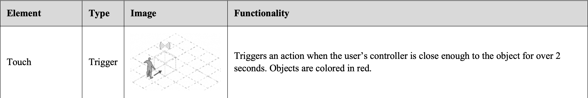
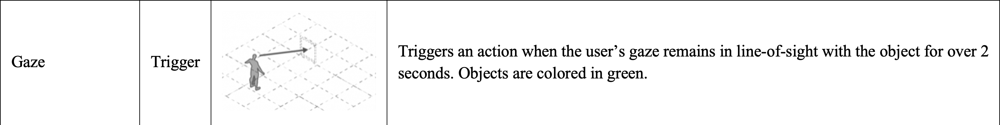
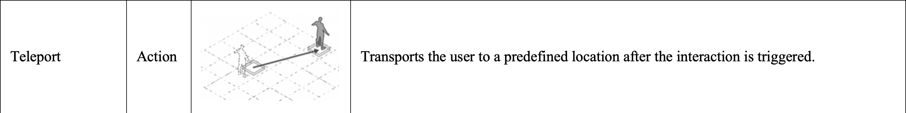
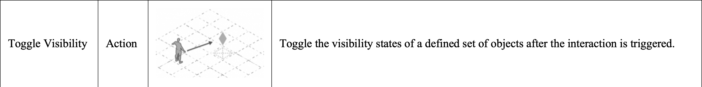
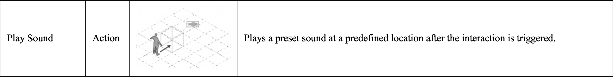
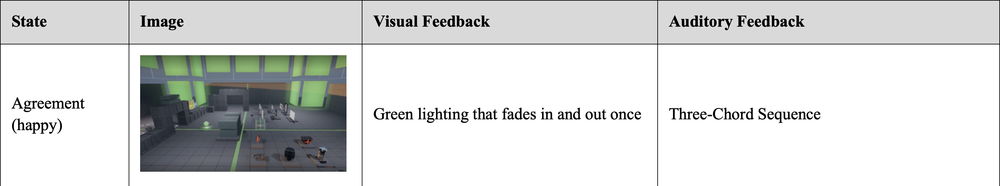
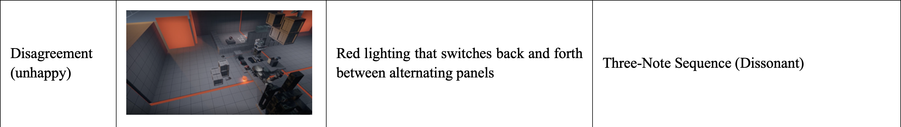
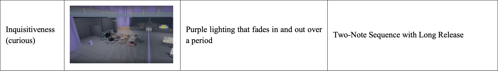
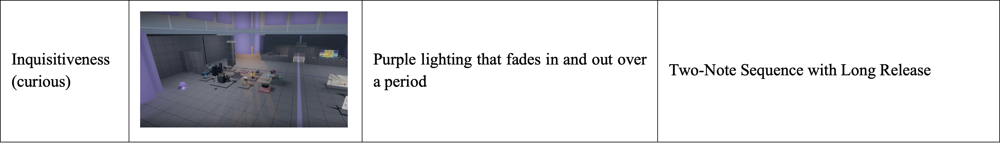
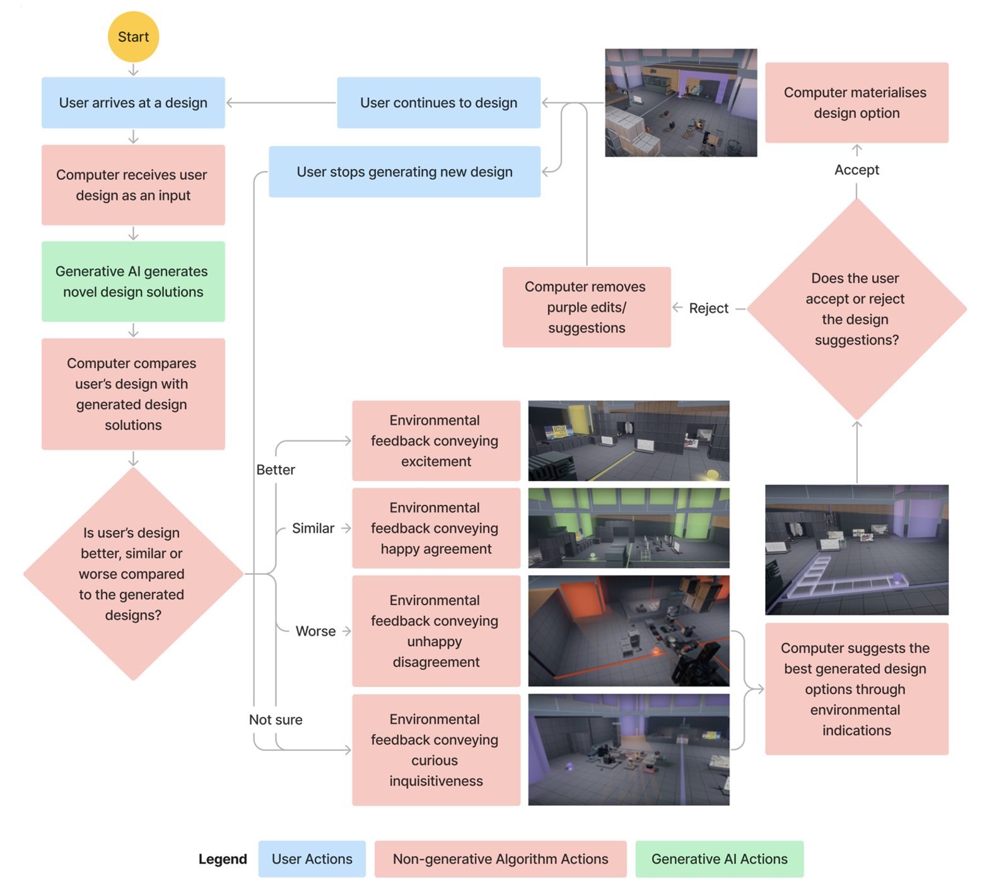

Project
Human-AI co-design in VR
Investigating Socially Interactive Virtual Environments as a Design Partner 🔮
Categories
Architecture | Research

Organisation
Role
Co-investigator
Other Researchers
· Asst. Professor Wang Yixiao (PI, Advisor)
· Ho Jin Teck Daryl (ASD Ph.D.)
Other Collaborators
· Formaxioms Lab (SUTD)
· Asst. Professor Carlos Aguiar (UIUC)
Duration
June 2022 - Present
Background
Metaverse technology is progressing rapidly in the past few years. In the near future, metaverse could become online community spaces where people play, communicate, meet, shopping, work, relax, etc. We could easily foresee virtual spaces, villages, or even cities being developing by online communities through a “bottom-up” approach, as if how villages or even cities in physical space were generated historically. Since most users are not professionally trained designers, design consultation and assistances will be needed. What if the metaverse itself is an AI-embedded design partner or consultant? This is where our project comes in.
Abstract
How do people perceive and interact with a Socially Interactive Virtual Environment (SIVE) that is developed as an intelligent, virtual, and spatial agent in the co-design process, or more specifically, a “Space Agent” design partner? How will these perceptions and interactions shape the human-SIVE co-design? Here, SIVE refers to AI-embedded virtual environments that can interact and collaborate with human users in a socially expressive way, and “Space Agent” refers to a socially expressive AI system with a spatial embodiment (e.g., a smart room, office, public space, etc.). This paper explores the intricate partnership between human users and SIVE through empirical studies. We aim to gain a preliminary understanding of how users perceive and engage with SIVE in the design process. Harnessing Unreal Engine, we designed and developed a virtual environment that used various visual and auditory modalities to interact with users and employed the Wizard-of-Oz (WoZ) technique to conduct in-lab experiments with 10 participants. The participants' perspectives and interactions were video recorded, and then carefully reviewed and analyzed by multiple researchers. A semi-structured interview was also conducted with each participant after the WoZ experiment, with the transcripts analyzed through the grounded theory coding technique. By examining these qualitative data, we aim to uncover valuable insights into the dynamics between human users and SIVE during the co-design process. The findings of this study contribute to a deeper understanding of the potential benefits and challenges associated with integrating SIVE into collaborative design practices and have the potential to shape the future of human-AI design partnerships and co-creations, offering guidance for designers, developers, and researchers seeking to leverage the unique capabilities of SIVE as a design partner.
Outline
Related Works · Methodology · Interaction Design · Findings · Discussion · Limitations · Conclusion · Contributions · Future Works · Acknowledgements
Related Works
The next section will be introducing four bodies of literature relevant to the discussion.Digital Tools in VR
Digital tools have become increasingly prevalent within design-related communities. These design tools afford exploration into novel media that goes beyond the traditional pen-and-paper medium in the design process and empowers individuals to express their ideas in easier and more creative ways. Within the context of social VR and metaverse-related applications, an emerging field of literature has begun to explore the implementation of such design tools that allow users to design their own environments in VR. The ability for users to design their own environments ties back to the notions of placemaking introduced by Dourish, whereby place is defined not by its physical characteristics, but rather by how users appropriate the space towards their own goals. The same notion could arguably apply to virtual environments in VR as well. Interviewing existing users of social VR platforms, Mcveigh-Schultz et al. highlight how users make use of meaning found within virtual environments to set social expectations, such as employing a campsite as a signifier for communal gathering and discussion.Apart from the visual characteristics of virtual environments, design tools also relate to the interaction design of the environments. These tools can be classified under the field of interaction authoring, which explores ways in which users are able to define the interactive elements of the environment without scripting. Interaction authoring tools relate to users’ capacity for action within these virtual environments and look towards granting end-users more agency to shape their virtual environments in line with their own goals, allowing for more dynamic social interactions and cultural practices to emerge from these platforms rather than have them prescribed top-down by developers. However, the effectiveness of such design tools is largely predicated on the design of the tools themselves and often forgo any form of design feedback beyond the functionality of the interface. The paper thereby goes beyond the paradigm where VR is only a platform of interaction authoring tools to explore smart VR as a socially interactive design partner in the human-VR co-design process.
Understanding Co-design
Co-design refers to the process of collaborative design thinking whereby actors work jointly to explore, evaluate, and develop solutions to design problems. As this process involves the communication and synthesis of various individual perspectives and goals toward the design objective, co-design can be seen as an inherently social activity. Within existing literature, co-design is employed in many contexts. For instance, co-design can be employed to integrate different fields of technical expertise and knowledge, particularly within the engineering field whereby the design output is multi-disciplinary by nature. Alternatively, co-design can also be understood as a means to engage and give agency to communities and end-users in the design process, particularly when these communities have a vested interest in the design output. This is prevalent in the realm of public policy and planning, whereby affected communities without domain expertise can contribute to the design process based on their feedback and experience. Likewise, within the context of social VR, users oftentimes are placed into environments that are pre-defined both spatially and in terms of interactivity, thereby limiting the scope of actions that the user can enact. Co-design offers a possibility allowing these users with no technical knowledge to have a part in shaping their environment and the interactions found within it.Co-design in VR
Existing approaches to co-design in VR tap into the medium's ability to simulate co-presence among users of shared virtual spaces. These approaches typically manifest through multi-user spaces whereby several embodied users can communicate, collaborate, and employ specific tools catered to the design task. These systems address the social nature of co-design, particularly the interaction between human actors within the virtual space and how certain authoring tools might help facilitate the design process. However, existing research looking into co-design methods in VR typically addresses discipline-specific forms of design such as within the field of architecture or industrial design. Employing co-design methods toward the design of the VR environments themselves appears to be an underexplored topic within VR research, despite its relevance to social VR and metaverse applications. In addition, existing research on VR co-design primarily focuses on interactions and collaborations among human actors. As the next section seeks to illustrate, an emerging field has begun to explore possible forms of human-environment interaction in which new forms of social interaction and co-design can be conceived.Socially Interactive Virtual Environments (SIVE) as a “Space Agent” design partner
Novel work has been done within the fields of social robotics on the design of interactive agents that respond to users in a socially expressive way while complementing the activities of the user. These works range from designing standalone elements such as robotic furniture and telepresence robots to more spatialized interventions that integrate with the environment at an architectural scale. In relation to co-design, researchers have proposed a framework for the design of collaborative environments as a design partner to foster joint actions and creativity. Such collaborative environments are further defined as an exemplar of “Space Agent,” an interactive or intelligent artifact that is both environmental (i.e., space-making) and human-like in (at least some of) its behaviors. While these works largely relate to the physical scale, the use of virtual reality as a medium presents new opportunities to explore new forms of human- “Space Agent” interactions unconstrained by the practical limitations found within the field of robotics.This study thereby proposes the implementation of SIVE, which can dynamically interact with users in a socially expressive manner through environmental feedback. SIVE also investigate the potential of intelligent environments that integrate artificial intelligence to interact with the users of the space. Rather than co-design between human actors, SIVE present an opportunity to understand how co-design might manifest between human actors and a non-human, socially interactive environment.
Methodology
This preliminary study addresses the following research questions:Q1. How do users perceive socially intelligent VR environments during co-design, and why?
Q2. How do users interact with socially intelligent VR environments in the co-design process, and why?
Q3. How does the human-SIVE interaction shape the design processes, and why?
Experiment Design
Firstly, Study I was conducted with 5 participants to examine and identify key usability issues of the authoring tools (the VR interfaces through which users create their own spatial designs). On top of that, participants also provided their responses regarding the socially expressive feedback provided by the SIVE during the co-design process, particularly how the sounds and lights triggered by SIVE were perceived. The data gathered was then used to inform the final design of the SIVE used for the actual user study.
Study II involved 10 participants, investigating the user perception of and interaction with the VR environment in the design process. Each participant took part in two sessions across a week whereby they experienced both the experiment condition (human-SIVE co-design) and the control condition (the participant designs in the VR environment that only provide authoring tools with no design suggestion or environmental feedback). More specifically, in the experiment condition, the participant interacted with the VR environment through the authoring tools and received design suggestions from the environment in a socially expressive manner; while in the control condition, the participant could only use the authoring tools without any environmental or design feedback.
Through having each participant experience both conditions in a randomized order (a within-subject study), this experiment seeks to observe the effect of the SIVE and its associated environmental feedback on the individual’s design process as compared to the controlled scenario where the VR only serves as a design tool.
In both cases, participants are given the same brief to design a virtual open house for a school using the authoring tools provided. When conducting the exercise in the SIVE, participants were informed that the VR environment would try to provide design suggestions and interactions with the environment were encouraged. The session started with a 10-minute onboarding of the controls of VR authoring tools, followed by 20 minutes of the “open-house design” activity. During the session, participants were also encouraged to think aloud as they went about the design activity, with both audio and screen recordings captured for the following interaction analysis and grounded theory coding.
After the design activity, a semi-structured interview was conducted to understand the participant’s perception of the interactive elements in both control and experiment conditions, as well as their responses to both the social feedback and design suggestions provided by the SIVE. These questions include:
1. Describe your experience of interacting with the VR environment.
2. Did the VR interactions prompt you to change your design intention or actions?
3. Did the VR interactions change the way you behave in the space?
The interview transcripts complemented the video recordings of the co-design activity, allowing us to better interpret the role of the SIVE in the co-design process. At the end of each session, a $10 voucher was given to each participant.
Interaction Analysis through Videos
Interaction video analysis is a well-established method for examining ethnographic videos. This method boasts its advantage in objectivity, which is achieved by multiple researchers collaboratively viewing and interpreting the videos. Additionally, the feasibility of repeatedly analyzing the same footage allows for the identification of previously unapparent phenomena. By utilizing this method, we transcribed the key video clips of human-VR interaction into transcripts for in-depth analysis through grounded theory coding.Grounded Theory Coding
We employed the Grounded Theory Coding technique to code and analyze all transcripts from the video analysis and interview audio recordings given the explorative nature of this study, following the four-step approach: 1) initial coding, 2) focused coding, 3) axial coding, and 4) theoretical coding.Interaction Design of the Socially Intelligent Virtual Environment (SIVE) as a Design Partner
To address the research questions stated earlier, a Socially Interactive Virtual Environment (SIVE) was designed and developed as a design partner with two aspects in mind: 1) VR Authoring Tools were developed to allow users to intuitively construct and manipulate not only the spatial components in the VR environment but the interactivity of these components. 2) Social interaction features were embedded in the interaction design of SIVE, addressing the environmental feedback. As participants engage in design activities through VR authoring tools, the SIVE responds dynamically as a design partner through environmental feedback.Authoring Tools
Authoring tools refer to the interfaces that users can use to construct and manipulate the VR environment and interactions embedded in the VR environment.In this project, a voxel-based system was implemented, enabling users to construct spaces by aggregating voxel geometry. This approach draws inspiration from popular sandbox-style video games like Minecraft, where players employ voxels as fundamental building blocks to shape their creative output in an open-ended manner. In this system, users can place tiles and blocks within a 1-meter grid coordinate as a means of constructing VR space. Furthermore, users have the freedom to manipulate, scale, and rotate these spatial components together with the other objects found within the VR space pertaining to the study.
On top of this, another type of authoring made available to the user comes in the form of interaction authoring. Given the interactive nature of VR environments, the design of these environments is not limited to the spatial components, but also how these elements might relate with each other and the users. For this study, users can thereby construct the interactivity of the spatial components found in the environment through two steps: first, define a trigger that executes the interaction, followed by the resultant action triggered by the user. To complement the use of VR and the nature of the design activity, two modes of trigger (touch and gaze) and three possible actions (teleport, toggle visibility, and play sound) were made available to the participants of the study, as seen in Fig. 2 and 3.
These interaction authoring tools are further illustrated in Table 1. To make such interactions perceptible to the participant, objects embedded with interaction are color-coded according to the type of trigger assigned to them.
     Table 1 Triggers and actions defined in the interaction authoring system
Socially Expressive Environmental Feedback
SIVE incorporated immersive environmental feedback that manifested through visual and auditory elements, responding to users' design actions and verbal expressions during the design process. This socially expressive feedback was simulated using the Wizard-of-Oz technique.As this study serves as a pilot, the very first step to assess the viability of SIVE and “space agent” concept in the co-design activities, we took a cautious and progressive approach in the SIVE design where agency is not solely ascribed to the VR environment. Instead, agency is distributed between a virtual agent, embodied by a luminous sphere (Fig. 10), and the socially expressive VR environment. The glowing sphere functions as a guiding entity, orchestrating the spatial reconfigurations that offer design suggestions to users. In addition, the social expressiveness of the virtual agent sphere is enhanced through environmental feedback channels facilitated by the semi-space agent. In this way, both the space agent (the VR environment) and the virtual agent (the luminous sphere) complement and augment each other as an integrated whole to fulfill the role of a design partner. In the human-SIVE interaction process, two different types of environmental feedback were designed, namely social feedback and design feedback.
Environmental Feedback relates to the dynamic interactions of the environment in response to the user's actions in the SIVE. These interactions can be classified into two categories: firstly, social feedback that aims to give a social personification to the SIVE that responds to human interaction, followed by design feedback that relates to ways in which the environment can provide design suggestions as a design partner. The integration of both social and design feedback ties back to the novel nature of the SIVE, whereby the study explores the relationship between the social expressiveness of the environment and the human-VR co-design process.
Social feedback is manifested within the SIVE in four different states: agreement, disagreement, excitement, and inquisitiveness. To express these states with social expressiveness (e.g., emotions such as happy, unhappy, excited, and curious), an array of panels was placed within the SIVE to surround the user as they partake in the design activity. These panels emit a specific sequence of colored lights and sound corresponding to the state that is activated. The design of the lights and sounds in relation to each social feedback state was iterated through user feedback.
 
 
Table 2 Different states of social feedback in the SIVE and their associated visual and auditory elements

Table 2 Different states of social feedback in the SIVE and their associated visual and auditory elementsDesign feedback, on the other hand, is manifested through the environment’s ability to proactively place blocks and make corrections to the existing elements within the space. Such feedback can be triggered in response to the user’s design actions and speeches. These changes made by the SIVE are color-coded purple, with users given the choice to either accept or reject the provided design suggestions.
The two primary ways design feedback materialize are in terms of spatial guides and building suggestions as seen in Fig. 4 and 5. Spatial guides aid users in designing spaces that are intuitive and have high spatial clarity such that visitors of the virtual space can easily navigate through the environment and locate points of interest or specific destinations. For this type of design feedback, users can either choose to build blocks or highlights within, on, or along the demarcated section, or they can just ignore the suggestion, and it would disappear after a while.
On the other hand, “building blocks” help users design specific structures or part of structures to showcase assets or serve as focal points of the virtual open house. For this type of design feedback, users can either choose to accept or reject it by pressing a button, or just ignore it and then it will disappear after a while. If users accept it, the suggestion will materialize in the form it was suggested, and users can follow-up on the suggestion by adding or deleting certain elements to refine it to a state they prefer.
Notably, social feedback and design feedback are not separated. In SIVE, they are coordinated with each other to give users environmental feedback in a socially expressive manner. For instance, when users are making poor design decisions, the SIVE could give social feedback of disagreeing with the current design decision (Table 2), followed by design feedback to improve on users’ current designs (Fig. 4 and 5).
Lastly, it is noted that while the social and design feedback should ideally be enacted through AI in the SIVE, we employed the Wizard-of-Oz technique in this study where a human researcher plays the role of a socially intelligent AI to give socially expressive feedback and design suggestions to the participant. This method has been widely used in the early exploration of complex, socially intelligent AI systems (e.g., social robots) to gather user feedback on the desired behavior of the social agent. We use this method for our preliminary exploration of the complex social interactions between human designers and SIVE in the co-design process.  Fig. 6 Interaction flow of the human-SIVE co-design process
According to Fig. 6, this human-SIVE co-design process comprises three key components: the tasks performed by users, the tasks performed by non-generative algorithms (algorithms that are not embedded with generative AI), and the tasks performed by generative AI. Arguably, the generative AI’s primary role in this interaction process involves learning from previous design exemplars and then generating novel design suggestions based on the user’s input. The focus of our research, however, centers on conveying design suggestions to users in innovative ways (through SIVE’s social and environmental interactions) to probe users’ responses, instead of what kind of novel design suggestions can be generated by AI algorithms. Thus, in our study, we only use the Wizard of Oz technique to simulate the spatial and social human-SIVE interaction, not the generation of novel design suggestions.
Throughout the experiment, our “wizard” assumed the role of the non-generative computer algorithm (the boxes colored in light red in Fig. 6), with a key objective of ensuring that every participant encountered all four designated forms of social feedback, in addition to design feedback, at least once during their respective experiments. Our “wizard” has a decade-long experience in architectural design which helps with leveraging intuitive judgment when responding to participants' design inputs.
In the experiment process, our “wizard” initially observed the participants' preliminary designs. Subsequently, based on the participants' design input and drawing from a knowledge database of exemplary designs in his memory, he engaged in a comparative analysis between the novel designs he had conceived, and the designs created by the user. Depending on whether the user's design exhibited superior, similar, inferior, or ambiguous qualities, our “wizard” accordingly activated the corresponding social and environmental feedback. Our “wizard” would also provide additional design suggestions when needed. Finally, if the participant did not proceed with making a new design and got stuck in the design process, the Wizard would directly enter the purple social feedback (the “not sure” mode in Fig. 6) and follow up with design suggestions. Please refer to the step-by-step protocol in Fig. 6.
Findings
Here, we report the findings of both Study I (usability study) and Study II (the study investigating users’ perception of and interaction with SIVE in the co-design process).Findings of Study I
Based on the user feedback from the usability study, we identified the key usability issues including 1) The environmental feedback is not eye-catching enough to get users’ attention; 2) The authoring tools are not intuitive enough for novice VR users; and 3) The auditory feedback of SIVE may not be socially expressive enough to evoke users’ social perception.To address the issues above, we made the following changes to the VR environment before conducting Study II. As seen in Fig. 7 and 8, we added panels around the area to make the environmental feedback more apparent and refined the UI elements and controls for the authoring tools. Some key changes to the UI elements and controls include smoothening the voxel-based ground, increasing the variety of assets, altering the atmosphere and materiality of the originally sterile environment to make it warmer and more sociable, and adding the ability to manipulate and scale the block structures that are built by the users as a single piece. Moreover, the representation of the virtual agent was changed to a more substantial form (i.e., a ball as seen in Fig. 10) as participants gave feedback that they could not imagine or relate the floating particles of light to a social actor.
Findings of Study II
General Feedback on the SIVE: Generally, participants in the user study found that the virtual agent (the pink ball in Fig. 10) is “pretty cool”, “interesting”, “cute”, and that it “inspires (their) design” and they “really appreciate it”. Most of the participants (P2, P4, P5, P6, P7, P8, P9, P10) were receptive to the virtual agent, acknowledging its presence and different types of feedback, with more than half of the participants (P2, P4, P7, P8, P9, P10) following up on its input (i.e., disagreement/suggestions) at least once throughout their experience with the SIVE. These participants typically can interpret the green, red, and purple environmental feedback, with a tacit understanding that green means that they are doing something right, red indicates that something has gone wrong, and purple refers to the suggestions that they can take up. Hence, when the SIVE lights up in green, participants continue with what they are doing, and when it lights up in red, most of the participants either stop what they are doing, ask what is wrong, or shift to another area to continue their design. When the SIVE lights up in purple and the virtual agent raises its suggestions, participants either accept it completely, partially accept it by making some changes to their current design or reject it if it deviates from their design intention. However, although the colors and sounds reflected the virtual agent’s intentions to a certain extent, participants were confused at times as they “don’t know what the ball wants to do,” elaborating that “without any words, it was difficult to understand” the suggestions.Participants Designed Mostly in a Linear Manner in the Control Condition: In the control condition where the VR only provides authoring tools, it was consistently observed that participants followed a linear design process, progressing from one part to the next without iterating on their designs. This solo design activity lacked interaction with another agent, resulting in a disconnected and isolated workflow. Interestingly, two participants provided feedback indicating that they felt a sense of increased efficiency in their design process during this control experiment. They attributed this perceived speed to the absence of distractions arising from environmental feedback, such as vibrant colors and accompanying sounds. However, this might be biased as one of those participants experienced the control experiment in the second round, hence, he would have gained familiarity with the building and interaction tools. This participant also admitted that he “was able to do it faster because (he) did it before, so more time was used to design rather than figuring out the functions”.
Participants’ Interaction with SIVE when Perceived as a “Design Tool”: In the experiment condition, eight among ten participants perceived the SIVE majorly as a smart design tool that provided design recommendations instead of a social agent. They seldom verbally communicated with SIVE or speak out loud in the design process, and rarely gave any consideration to SIVE’s design suggestions. This resulted in a predominantly linear design process with intermittent occurrences of design iterations. For instance, at the beginning of the study, one participant (P10) accepted SIVE’s suggestion and used it as a starting point to inspire his next steps while ignoring the SIVE’s feedback later on. He explained during the interview that after a while, he had formulated “a whole plan of trying to create a flow of how the visitors will interact with all the exhibits” and the environmental and design feedback did not align with his design intentions. In this case, the SIVE served as a catalyst for divergent thinking in the beginning, however, the design partnership did not continue any further once the participant gained clarity over his design plans. Similarly, P2 mentions that he “was busy designing so (he) ignored the virtual agent”, although close to the end, he accepted its suggestion of building an arch as a focal point of the virtual open house. In this case, the SIVE facilitated convergent thinking or design-decision making at the end of the design process, helping to finesse P2’s design. Furthermore, although P5 and P6 were sometimes aware of the environmental feedback (observed via them turning to look at the virtual agent or by voicing out a question related to the environmental feedback), they disregarded the feedback and instead continued with what they were building. Some participants opined that the environmental feedback did not spur them to change their design intentions or actions as at times, the SIVE might not be within their line of sight and its suggestions might not align with their design intentions or be immediately intuitive. Nevertheless, even the two participants (P1, P3) who were not receptive to the environmental and design feedback both mentioned that the “colors and sounds added more to the experience” and “without the variations in the environment, it feels a bit empty”.
Furthermore, it was intriguing to observe that some of the participants developed expectations for SIVE after a few interactions with it. For instance, after figuring out that SIVE was able to react to his design and could offer suggestions by building structures, one participant (P4) expected that it could “predict what (he) was going to design (and that) it would complete some of (his) designs” when he was building the first two letters of his name. However, the researcher who controlled SIVE via WoZ did not recognize that, hence P4 was disappointed that his expectations were not met. Some were also disheartened that SIVE only reacted to their designs rather than their presence or other interactions, with one participant (P5) mentioning that SIVE did not have any responses when she pointed at it or arrived in the space. She voiced that more modes of interaction with the SIVE such as prompting via speech or glowing brighter would help facilitate “develop(ing) a deeper relationship with the space for a more impactful experience.” In this case, P5 showed the tendency to perceive SIVE as a social agent but failed to do so because of SIVE’s limited modes of interaction.
Participants’ Interaction with SIVE when Perceived as a “Design Partner”: On the other hand, the remaining two participants perceived the SIVE as a knowledgeable social agent (e.g., a design partner or consultant) capable of providing expertise and guidance, actively engaged with it by proactively communicating with it via speech and responding to environmental feedback via design actions. This collaborative dynamic fostered an iterative design process that encompassed both convergent and divergent design iterations, ultimately leading to a more cohesive and creative design. A prime example would be P7, who responded to the SIVE’s feedback with “Why is it shining red” and “I feel that he wants to move this.” He thought that the virtual agent was “telling (him) to move the panel away from the inside”, which “made (him) look around and realize that it was getting very congested at the center so (he) was prompted to move away” from the center to continue his design. When he shifted the object that SIVE was referring to away from the inside, the SIVE positively reacted by lighting up in green, demonstrating “Agreement.” He expressed that the “purple suggestions were pretty good as it (not only) helped (him) to create a larger space at the central part”, but it also allowed him to “realize something new” which inspired another part of his design, displaying divergence. Finally, he reacted to another green environmental feedback by mirroring the recommended design.
Discussion
This study explores the innovative concept of a socially interactive virtual environment serving as a design partner. Before delving into the discussions, it is important to establish two key premises that inform the structure of our analysis.First, the significance of iteration in design and product development has been widely acknowledged, with experts considering it one of the most crucial aspects of the design process. The advantages of iteration have also been well-documented, as it empowers designers to identify and rectify flaws, navigate through complexity, uncertainty, and change, and facilitate the progress of design. Hence, it is generally accepted that “iteration” plays a fundamental role in enhancing an effective design process, in turn fostering the development of good design. Therefore, in this study, we infer that more design iterations can potentially lead to better design processes and outcomes as compared to very few design iterations.
Second, when designers have a design partner capable of making suggestions, they are more likely to deliberate on their design decisions, reconsider certain designs, and potentially iterate to achieve better results. Our observations during the study indicate that SIVE encourages participants to think and iterate more on their design decisions, unlike the control condition where the VR environment only offers authoring tools. However, participants who did not perceive the SIVE as socially interactive only performed a very limited amount of design iterations, whereas those who perceived it as a socially interactive agent (e.g., a design partner) engaged in many more design iterations, resulting in a more robust design process and arguably, better chances to generate good design outcomes.
Thus, through this explorative study, we believe that users’ different perceptions of the virtual environment (a regular design tool, a smart design tool, or a socially interactive design partner) play a pivotal role in influencing users’ interaction with it, which in return shapes their design process (e.g., performing less or more design iterations). In the control experiment, participants predominantly perceived and interacted with the virtual environment as a mere, regular design tool. Conversely, in the experiment involving the SIVE, participants who perceived it as an intelligent design tool but not socially interactive, displayed limited engagement and interaction with its feedback. Some participants failed to notice the feedback entirely, while others acknowledged it but considered the SIVE's input unworthy of consideration, ultimately dismissing it. However, it is worth noting that most of these participants still encountered at least one instance where they considered SIVE’s feedback, either accepting, rejecting, or building upon its suggestions. In contrast, participants who perceived the virtual environment as a socially interactive design partner held it in higher regard, actively seeking and carefully contemplating its feedback. They placed significance on the input provided by the SIVE, carefully considering it before arriving at well-informed design decisions. Their regard for the SIVE enhanced the effectiveness of the design partnership between the designer and SIVE.
Considering that co-design not only improves creative thinking (e.g., idea generation) but also enhances design outcome, it would be beneficial for designers to view SIVE as a design partner that promotes a more effective and favorable co-design process. As previously explained, co-design involves a collaborative approach to design thinking where individuals work together to investigate, assess, and advance solutions for design challenges. Therefore, for co-design to effectively occur between users and SIVE, it is essential for the involved actors, namely the designer and SIVE, to engage in meaningful and social communications. These communications could enable them to carefully consider each other's viewpoints and intentions, fostering a harmonious collaboration towards shared design objectives which promotes design iterations.
Limitations
In this study, the WoZ technique was employed to simulate the embodied interaction between humans and SIVE as this method is frequently utilized to explore the dynamics of human interaction with future AI systems. However, it is important to recognize the limitation of this simulation since the design suggestions given to the participants come from human researchers instead of a generative AI. It is possible that AI-generated design suggestions could be different enough from human-generated ones, and thus, lead to certain changes in people’s perception of and interaction with SIVE. However, given the novelty of this research field and the exploratory nature of this study, we believe the current WoZ simulation is good enough to give us some preliminary but important insights into the human-SIVE co-design process before we develop and test the fully functional SIVEs in the future.In addition, the findings indicate that most participants (8 out of 10 participants) who engaged with the SIVE remained unconvinced of its socially interactive nature, resulting in a reduced likelihood of perceiving it as an intelligent agent capable of delivering valuable design feedback. This skepticism may stem from the fact that the interaction design of SIVE is still in its early stage of development. Future prototypes with higher fidelities and more interaction modalities (e.g., verbal communications and tangible feedback) of social interaction between humans and the system could potentially address this issue.
Finally, it is worth noting that while all participants possessed some level of design background, as they had completed a similar course during their freshman year at the university, their individual levels of design expertise varied. This discrepancy in expertise could have potentially influenced their inclination to iterate on their designs, and thus, becomes a confounding variable for this study.
Conclusion
Our study has demonstrated the potential of a Socially Interactive Virtual Environment (SIVE) to promote better human-AI co-design as a design partner, leading to a more rigorous design process and likely, better design outcome. Through a qualitative, in-lab study with 10 participants, we observed that users’ different perceptions of the virtual environment (a regular design tool, a smart design tool, or a socially interactive design partner) played a pivotal role in influencing users’ interaction with it, which in return shaped their design process (e.g., performing less or more design iterations). These findings offer a glimpse into the future of how SIVE could act as a social, embodied AI design partner, offering unprecedented capabilities to assist, inspire, and collaborate with human users during the design process. By combining the strengths of AI and immersive virtual environments through VR “Space Agent,” we can unlock new frontiers of co-creation within the metaverse.Contributions
Practically, our research showcases the potential of employing SIVE to promote human-AI co-design for a better design process and outcome. This approach particularly holds value for enabling bottom-up co-creation within the metaverse, where users with limited design skills or backgrounds actively participate in the design and shaping of virtual worlds. By empowering layman designers through human-SIVE design partnership in this co-design process, we help users to better contribute their unique perspectives and ideas, promoting inclusivity, diversity, and a sense of ownership over the virtual spaces they create. Remarkable examples like Minecraft have already demonstrated the transformative impact of bottom-up co-creation, as users not only engage in gameplay but also view the virtual realm as a platform for creative expression and community interaction.Academically, it is worth noting that to the best of our knowledge, our research represents a pioneering exploration, as it provides the first-ever illustration of how an intelligent virtual environment can engage in co-design with human designers through social interaction. This research also serves as an exploration of how the concept of “Space Agent” could be employed in virtual environments to promote human-SIVE design partnership. Finally, our qualitative study offers valuable insights into the interaction design of an intelligent virtual design partner, which shows the promising future of human-SIVE design partnership as a new direction for metaverse research.
Future Works
Firstly, an AI system capable of generating 3-dimensional design suggestions should be integrated into the current SIVE prototype so that we will no longer be simulating human-SIVE design partnerships through WoZ technique but providing a genuine human-SIVE co-design experience to participants.Additionally, future studies can expand the scope by including a larger and more diverse participant pool, encompassing different cultural backgrounds and design expertise levels. This would allow for a more comprehensive understanding of how these factors influence users’ perception of and interaction with SIVE. Moreover, conducting longitudinal studies that track participants' progress over an extended period can also provide insights into the long-term impact of utilizing SIVE for human-AI co-design.
Finally, exploring the application of SIVE in diverse domains beyond design, such as education, entertainment, and healthcare, can uncover new possibilities and benefits. Investigating how different user groups perceive and engage with spatial and intelligent virtual partners (VR “Space Agent”) in various contexts can provide valuable insights for future applications of the intelligent metaverse.